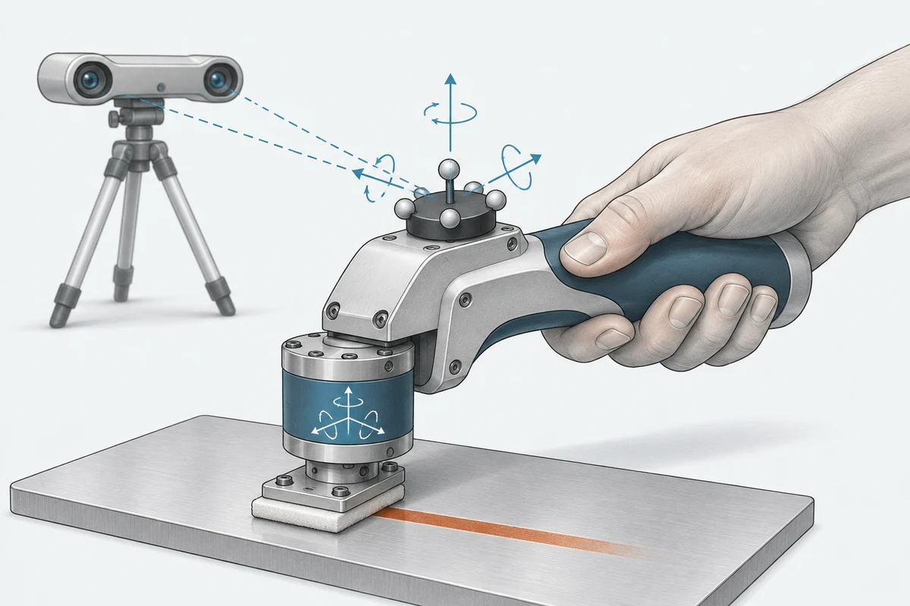

ForceTrace-CAFE：多模态示教采集与真机部署 ForceTrace-CAFE: multimodal demonstration capture and policy deployment
参与 ForceTrace-CAFE 接触操作示教学习研究，负责视觉、力觉与位姿数据采集、工具载荷标定补偿，以及策略和对比基线的真机部署。实验覆盖擦拭、刮除与装配任务。Contributed to ForceTrace-CAFE through visual, force and pose data acquisition, tool-load calibration and compensation, and hardware deployment of the policy and comparison baselines. Experiments cover wiping, scraping and assembly.

沿着一次擦拭读懂接触力Reading the force trace of a single wipe
接触前的读数Before the first contact
工具悬空时转动手柄，传感器就可能报告力和力矩变化。工具重量在各轴上的投影会变，质心到传感器原点的力臂还会引入力矩。先补偿这些量与传感器零偏，才能解释工具刚触及表面时的读数变化。Rotating the tool in free space can change the measured force and torque. Its weight projects onto different sensor axes, and the offset centre of mass creates a moment. Compensating for these terms and sensor bias makes the change at first contact interpretable.
划出擦拭区间Identify the interval on the surface
沿对齐的图像、工具位姿和力信号标注接触、持续擦拭和抬离。这样可以在同一阶段比较两次示教的载荷，避免把一次仍在空中接近的轨迹与另一次已贴住表面的轨迹直接相减。Aligned images, poses and force readings mark contact onset, the sustained wipe and lift-off. Comparing loads within the same phase avoids pairing a tool still approaching in one trial with a tool already on the surface in another.
把同一问题带到真机Ask the same question on the robot
策略及对比基线部署后，真机实验同时查看工具轨迹与接触力曲线。即使两种方法的路径很接近，持续接触段的载荷仍可说明它们是否以相近的力度执行擦拭。Hardware trials record the tool trajectory and contact-force profile for the deployed policy and its baselines. Even when two methods trace similar paths, loads during sustained contact show whether they apply comparable forces through the wipe.
手持示教的力、位姿与视觉测量Force, pose and visual measurements during handheld demonstrations
接入 RGB-D 相机、六维力／力矩传感器、双 Vive Tracker 和夹爪编码器，构建手持示教装置的多设备采集程序。根据跟踪数据恢复工具末端位姿，统一视觉、运动与受力数据的坐标表达，记录接触操作过程。Acquisition software integrates an RGB-D camera, a six-axis force/torque sensor, two Vive Trackers and a gripper encoder on the handheld demonstration device. Tracker measurements recover tool poses, and coordinate transformations place visual, motion and force data in a common frame for recording contact-rich manipulation.
工具重力与传感器零偏补偿Tool gravity and force/torque sensor bias compensation
标定工具重量、质心相对传感器的偏置及传感器零偏，补偿工具在不同姿态下引入的重力和附加力矩。补偿后的六维力／力矩数据用于接触阶段标注、示教分析和策略执行对比。Calibration estimates tool weight, the centre-of-mass offset relative to the sensor and sensor bias. Compensation removes the orientation-dependent contributions of tool weight and its moment. The compensated wrench data support contact-phase annotation, demonstration analysis and comparisons of policy execution.
上式描述缓慢运动时的力平衡，各分量均在传感器坐标系中表示。工具悬空时，接触力为零；翻转手腕，重力在各轴上的投影仍会变化。若质心偏离传感器原点，这个偏移还会产生力矩。This quasi-static force balance uses the sensor frame throughout. With the tool clear of the surface, contact force is zero, yet rotating the wrist changes the weight projected onto each sensor axis. If the tool’s centre of mass is offset from the sensor origin, its weight also produces a moment.
接触阶段标注与多频数据组织Contact-phase annotation and multi-rate training data
图像、工具位姿、夹爪状态与补偿后的力信号沿同一时间轴对齐。依据图像与力信号的对应变化，示教序列划分为初次接触、持续接触和释放阶段。批处理程序按视觉与力觉策略各自需要的频率整理动作序列，并将配对的观测与动作导出为 HDF5 数据。Images, tool poses, gripper states and compensated force measurements share a common timeline. The aligned images and force signals support annotation of contact onset, sustained contact and release. Batch processing prepares action sequences at the rates required by the visual and force-based policies and exports the paired observations and actions to HDF5.
策略的真机部署与对照实验Policy deployment and comparative hardware experiments
完成策略及对比基线的机器人部署，适配观测与动作接口，调试传感器采样、模型推理和动作序列执行的时序。在擦拭、刮除及装配实验中，结合工具轨迹与实测接触力比较各方法的执行表现。Hardware deployment adapts observation and action interfaces for the policy and comparison baselines and coordinates sensor sampling, inference and action-sequence execution. Wiping, scraping and assembly experiments compare execution using tool trajectories and measured contact forces.